Conception d’une prothèse externe de genou polycentrique
Étude de conception mécanique à quatre barres : analyse des exigences, modélisation cinématique, prédimensionnement, conception CATIA, vérifications numériques et préparation de fabrication. Projet académique réalisé en groupe, 2025–2026.
Objet : définir une articulation prothétique assurant un compromis entre stabilité en phase d'appui, mobilité en flexion, masse et tenue mécanique.
Principe de fonctionnement
Quatre barres et quatre liaisons pivots forment une chaîne articulée plane. À la différence d'une charnière à axe unique, le centre instantané de rotation (CIR) change de position lorsque la géométrie se déforme. Cette propriété sert à étudier le comportement mécanique recherché pendant la marche.
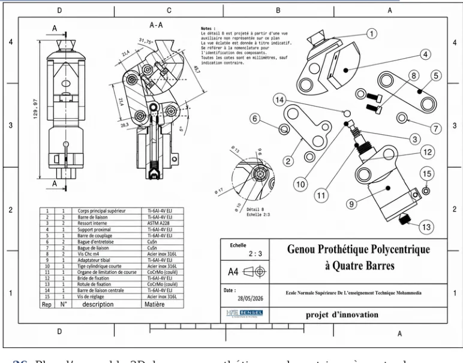
Conception et nomenclature d'ensemble sous CATIA V5.
Masse du modèle CAO452 gModèle 3D, pas de prototype pesé
Migration CIR rapportée21,7 mmValeur de l'étude cinématique
Cas statique étudié4 000 NCalcul numérique, S ≈ 2,44
Pré-évaluation de fatigue2 200 NEstimation, n ≈ 1,30
Logique d'ingénierie : spécifier les fonctions → proposer une cinématique → dimensionner les liaisons → concevoir les pièces → confronter le modèle aux cas de charge → préparer la fabrication et les contrôles.
02 / 06
Analyse fonctionnelle et exigences
Avant de définir les barres, l'étude fixe des critères évaluables : usage, amplitude, stabilité, charge, masse, interfaces et maintenance.
ANALYSE FONCTIONNELLE
Fonctions de service et vérifications attendues
Spécification — méthodes APTE / SysML
Les exigences ne se limitent pas au mouvement : elles couvrent la marche, les interfaces, le démontage et la résistance de l'assemblage. Le tableau distingue les cibles des vérifications réalisées sur le modèle.
Fonction
Critère ciblé
Moyen de vérification prévu
État de l'étude
FS1 · Permettre la marche
Vitesse cible ≥ 1,2 m/s
Analyse de marche / essais d'usage
Non testé
FS2 · Stabilité en appui
CIR postérieur en extension
Trajectoire CIR + essai cinématique
Calcul cinématique
FS3 · Autoriser la flexion
Amplitude cible ≥ 120°
Analyse de fermeture + mesure angulaire
Plage à confirmer
FS4 · Mouvement polycentrique
Migration postéro-supérieure du CIR
Modèle géométrique et trajectoire
Calcul cinématique
FS5 · Résister aux efforts
Charges statiques et cycliques
RDM / calcul EF puis essais sur banc
Calculs numériques
FS6 · Réglage morphologique
Hauteur ± 20 mm ; angle ± 5°
Contrôle interfaces et réglages
À vérifier
FS7 · Maintenabilité
Démontage ≤ 30 min
Montage et maintenance instrumentés
Non testé
OBJECTIFS DE CONCEPTION
Valeurs du cahier des charges
Critère
Cible étudiée
Signification
Flexion du genou
≥ 120°
Amplitude fonctionnelle visée
Masse maximale du mécanisme
≤ 1 200 g
Cible recommandée : ≤ 900 g
Enveloppe mécanique
H ≤ 120 mm ; Ø ≤ 80 mm
Contraintes d'intégration
Essai statique de référence
4 000 N
Cas de charge de dimensionnement présenté
Essai cyclique de référence
2 200 N, objectif 3 millions de cycles
Essais physiques non réalisés
Ce sont des exigences de conception et des conditions étudiées, pas des performances validées expérimentalement.
ARCHITECTURE SYSTÈME
Modélisation et traçabilité
Approche SysML
L'architecture est structurée à partir des besoins, des interfaces avec l'emboîture et le pied, des séquences d'utilisation et des blocs mécaniques. Elle relie les exigences aux pièces et aux vérifications à prévoir.
Référentiels considérés
ISO 10328 pour les essais structurels des prothèses de membre inférieur, références d'interfaces et démarche d'analyse des risques. Leur prise en compte ne signifie pas qu'une certification a été obtenue.
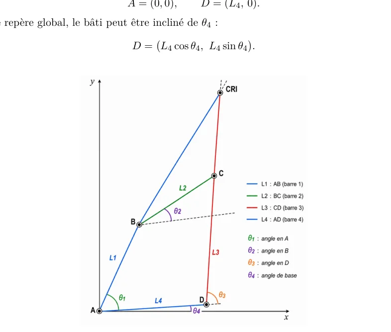
SYSTÈME ET INTERFACES
Chaîne de traçabilité de la conception
01 · BESOINStabilité, flexion et légèreté
Traduire les situations de marche en fonctions et contraintes.
02 · EXIGENCESGéométrie, charges et dimensions
Définir des grandeurs et des limites contrôlables.
03 · SOLUTIONMécanisme 4R + interfaces
Associer les pièces et la cinématique à chaque fonction.
04 · PREUVESCAO, RDM, EF, puis essais
Comparer les indicateurs calculés aux mesures futures.
La traçabilité relie les exigences aux activités de vérification : elle ne suppose pas que les essais physiques ont été exécutés.
03 / 06
Étude cinématique et optimisation
Le modèle du mécanisme 4R repose sur une fermeture géométrique de chaîne. La recherche de dimensions est menée sous contraintes de mobilité et de migration du CIR.
PRINCIPE CINÉMATIQUE
Fermeture du quadrilatère articulé
Les pivots fixes A et D définissent le bâti. Les articulations B et C se déplacent tandis que les longueurs des quatre barres demeurent constantes.
L₁ cos θ₁ + L₂ cos θ₂ = L₄ + L₃ cos θ₃ L₁ sin θ₁ + L₂ sin θ₂ = L₃ sin θ₃
Dans le repère attaché au bâti AD, ces deux relations déterminent la géométrie admissible. Le CIR du coupleur s'obtient à l'intersection des droites (AB) et (CD) par le théorème de Kennedy.
CONTRÔLES GÉOMÉTRIQUES
FermetureLes quatre pivots forment une boucle compatible.
Points mortsÉviter les alignements singuliers dans la plage utilisée.
Centre de rotationContrôler la position et la migration du CIR.
AmplitudeVérifier continuité et limites de flexion.
Repérage des pivots A, B, C, D et du centre instantané de rotation.
OPTIMISATION NUMÉRIQUE
Géométrie retenue dans l'étude
Paramètre
Valeur
L1 · Barre AB
35,5 mm
L2 · Barre BC
21,4 mm
L3 · Barre CD
45,7 mm
L4 · Bâti AD
28,3 mm
Inclinaison du bâti
5°
CIR initial annoncé
(−28,4 ; +42,1) mm
Migration annoncée (0°–20°)
21,7 mm
Recherche de dimensions
Une recherche par balayage de paramètres a été proposée pour vérifier l'existence du mouvement, éviter les configurations de blocage et améliorer la trajectoire du CIR.
Les dimensions et le CIR sont présentés comme les résultats numériques de l'étude. Certaines conventions d'angles et tables intermédiaires nécessitent une consolidation pour reproduire rigoureusement l'ensemble du mouvement.
TABLEAU CINÉMATIQUE
Évolution calculée du centre instantané de rotation
Les valeurs suivantes décrivent huit configurations étudiées. Elles n'équivalent pas à une mesure clinique de la flexion et ne démontrent pas à elles seules un mouvement continu sans blocage.
Angle d'entrée
CIR x (mm)
CIR y (mm)
Interprétation
0°
−28,4
42,1
Postérieur
11°
−22,7
53,8
Postérieur
22°
−14,3
58,6
Postérieur
33°
−5,8
67,2
Postérieur
44°
3,6
74,8
Antérieur
55°
12,9
81,5
Antérieur
88°
38,5
92,4
Antérieur
110°
48,2
95,7
Antérieur
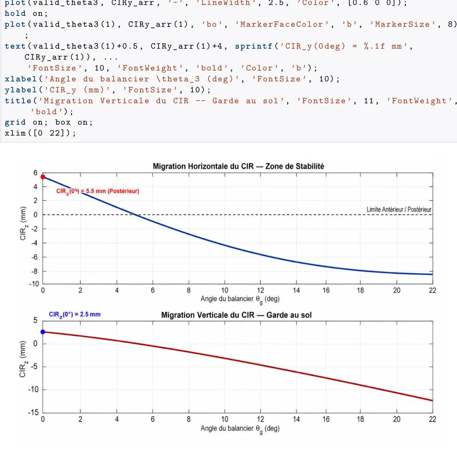
Courbe du centre instantané de rotation (CIR) issue de l'étude numérique.
POINTS À CONSOLIDER
Hypothèses et cohérence des données
Discrétisation de l'optimisation
Les longueurs finales 35,5 / 21,4 / 45,7 / 28,3 mm sont données avec une décimale alors que la grille décrite progresse par pas de 2,5 mm. Le lien entre recherche sur grille et réglage final reste à préciser.
Plage de flexion
La cible fonctionnelle est 120° minimum, alors que le tableau cinématique se termine à 110° et que d'autres sections examinent une plage plus large. Ces valeurs ne suffisent pas à affirmer l'amplitude finale validée.
À vérifier : la migration de 21,7 mm est présentée comme un résultat initial ; le tableau échantillonne notamment 0° et 22°. Les longueurs finales ont une précision différente du pas de 2,5 mm mentionné pour la recherche exhaustive. Le relevé tabulé s'arrête à 110° alors que le cahier des charges vise au moins 120°.
04 / 06
Conception CATIA V5 et définition des pièces
L'assemblage rassemble les interfaces proximale et distale, le corps porteur, les bielles, axes, bagues et organes de guidage.
ARCHITECTURE MÉCANIQUE
Rôle des familles de composants
INTERFACE PROXIMALESupport supérieur
Positionner la liaison avec l'emboîture et transmettre la charge.
STRUCTURE PORTEUSECorps et bâti
Recevoir les réactions aux axes fixes et assurer la rigidité.
MOUVEMENTBielles et coupleur
Définir la fermeture 4R et guider le CIR.
INTERFACE DISTALEAdaptateur tibial
Raccorder le mécanisme au segment inférieur prothétique.
Les pivots, axes, bagues et butées assurent le guidage, la limitation des courses et la maintenance ; ce sont des zones critiques pour les jeux et l'usure.
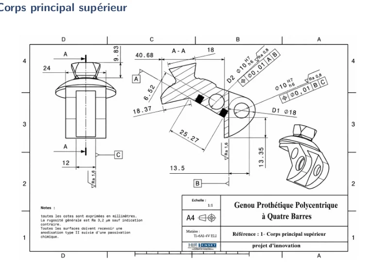
Corps principal supérieurSupports et reprise des efforts
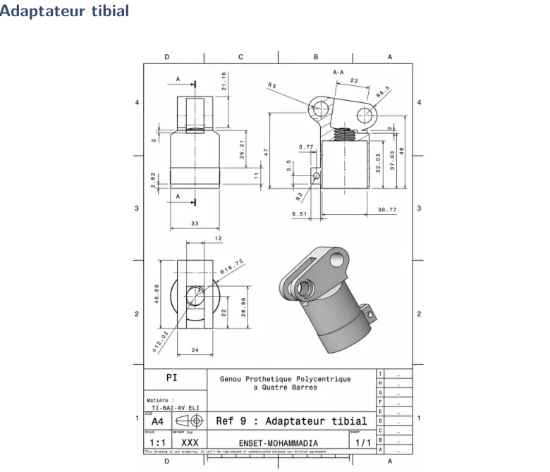
Adaptateur tibialInterface mécanique distale
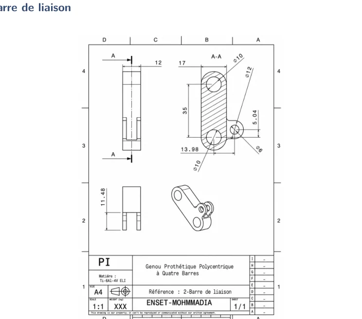
Barre de liaisonCinématique et entraxes des pivots
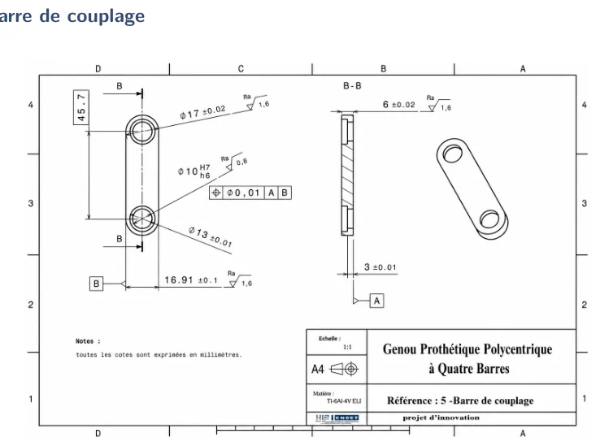
Barre de couplageTransmission du mouvement
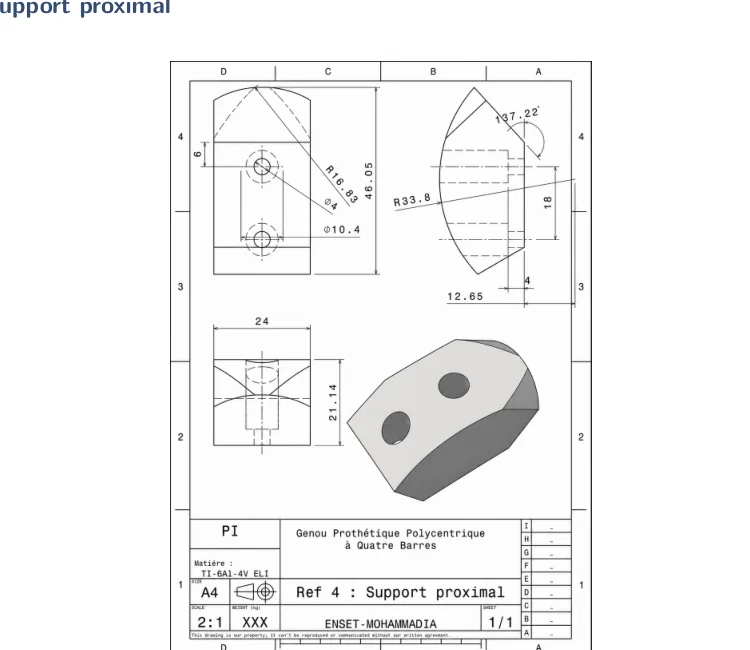
Support proximalFixation et intégration du dispositif
VÉRIFICATION CAO
Propriétés de masse de l'ensemble
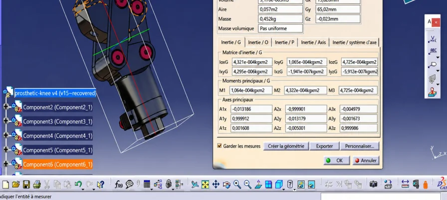
Le modèle numérique affiche une masse d'assemblage d'environ 452 g, sous les hypothèses de matériaux de la conception.
Cette valeur se situe sous l'objectif de masse maximale (1 200 g) ; elle reste une mesure CAO, distincte d'une mesure sur un prototype physique.
COTES DE CONCEPTION
Dimensions fonctionnelles retenues
Caractéristique
Cote / exigence
Raison de conception
Barre, épaisseur utile
6 mm
Contact du coussinet et section résistante.
Axe principal
Ø 10 mm
Cisaillement et flexion locale des axes.
Coussinet
Ø 10 / Ø 13 mm
Guidage du pivot et protection des surfaces.
Zone de pivot de barre
Ø 17 mm
Épaisseur radiale autour de l'alésage.
Renfort du support
Ø 18 mm
Matière supplémentaire autour de la réaction d'appui.
Couple axe / alésage
H7/h6 (proposé)
Jeu et précision de rotation à contrôler.
Cotes issues du pré-dimensionnement ; elles appellent des contrôles de tolérances, d'état de surface et d'assemblage avant fabrication.
05 / 06
Dimensionnement RDM et simulation numérique
Le prédimensionnement des éléments porteurs est complété par l'analyse du maillage, des contraintes de Von Mises, du déplacement et d'une estimation préliminaire de fatigue.
CALCUL DES EFFORTS
Du chargement aux dimensions des pivots
Équilibre statique du mécanisme
Les trois barres mobiles sont isolées et leurs actions de liaison sont assemblées en un système de neuf équations. Pour le cas illustratif à 784,8 N (poids de référence), le modèle conduit notamment à une réaction d'environ 682,2 N au pivot D.
Les dimensions résistantes ne sont toutefois pas choisies sur ce seul poids de corps : l'enveloppe de dimensionnement est fixée à 4 000 N.
ZONE DE PIVOTØ 17 mm10 mm d'alésage + 2 × 3,5 mm de matière
Ces résultats simplifiés de RDM justifient les choix de cote. Ils ne se substituent pas à l'évaluation de l'assemblage complet par éléments finis et essais.
MATÉRIAUX PRINCIPAUX
Choix selon le rôle mécanique
Famille de pièces
Matériau retenu
Motivation technique
Corps et bielles
Ti-6Al-4V ELI
Rapport résistance / masse
Coussinets et bagues
Bronze CuSn
Guidage et couple de frottement
Axes et visserie secondaire
Acier inoxydable 316L
Résistance et tenue environnementale
Ressort de rappel
Acier ASTM A228
Propriétés élastiques
Sélection multicritère dans le cadre du pré-dimensionnement ; les certificats matière et essais restent à fournir pour une réalisation.
SIMULATION NUMÉRIQUE
Préparation du modèle et éléments finis
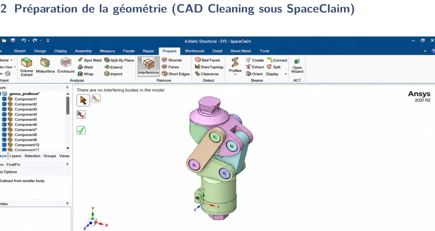
Préparation CAO · SpaceClaim
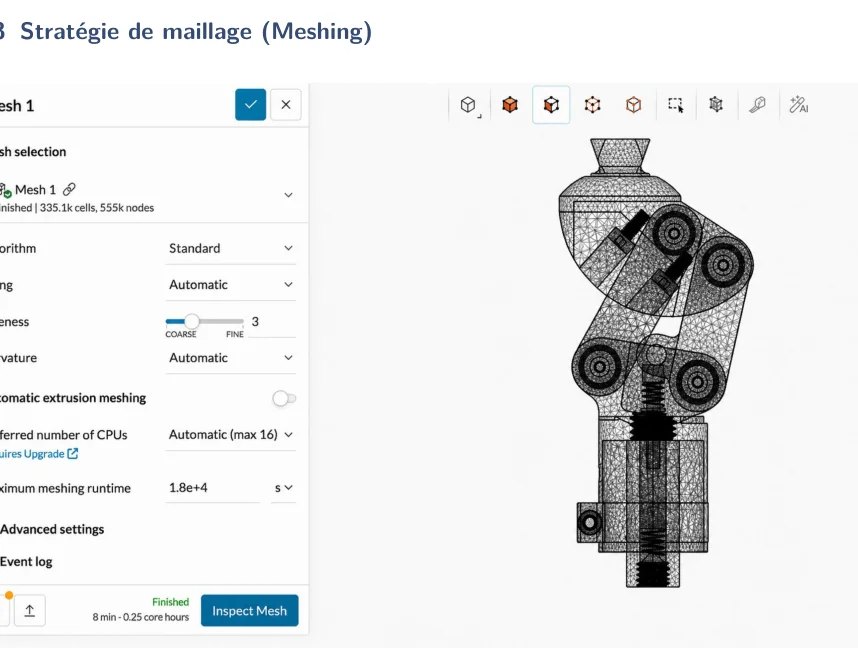
Maillage volumique · SimScale
Les filetages et petites entités ont été simplifiés pour le calcul. L'étude rapporte une comparaison de maillages passant d'environ 150 000 à 335 100 éléments et des valeurs de contraintes stabilisées autour de 360 MPa.
CONVERGENCE NUMÉRIQUE
Comment la valeur de contrainte a été retenue
Maillage
Éléments
Contrainte nominale
Premier niveau
≈ 150 000
358 MPa
Raffinement final
335 100
360 MPa
Variation relative
—
≈ 0,56 %
Interprétation de la convergence
La faible variation entre ces deux maillages est un indicateur de stabilité de la contrainte nominale dans la zone comparée. Elle ne démontre pas, à elle seule, la validité de tous les contacts : un pic isolé au voisinage d'un contact a été écarté de la valeur retenue.
Critère statique calculé : S = Rₑ / σ = 880 / 360 ≈ 2,44, en utilisant la limite d'élasticité retenue pour le titane.
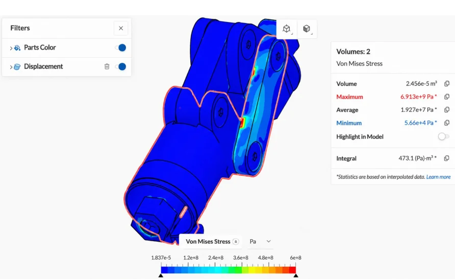
Champ de contrainte de Von MisesCas statique 4 000 N, interprétation des concentrations locales
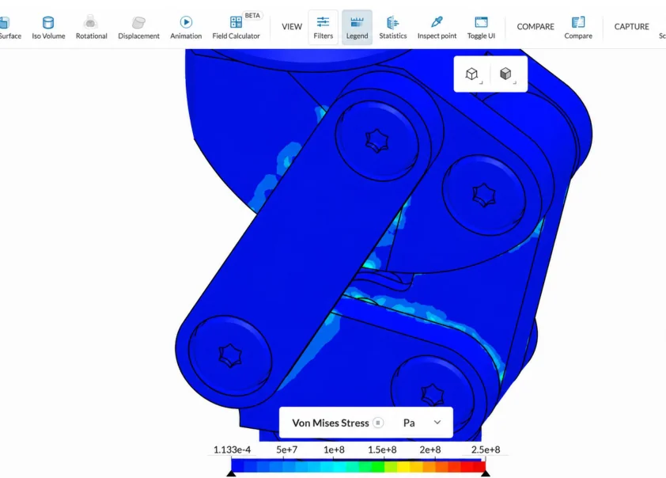
Détail de la zone sollicitéeLecture des concentrations et contacts
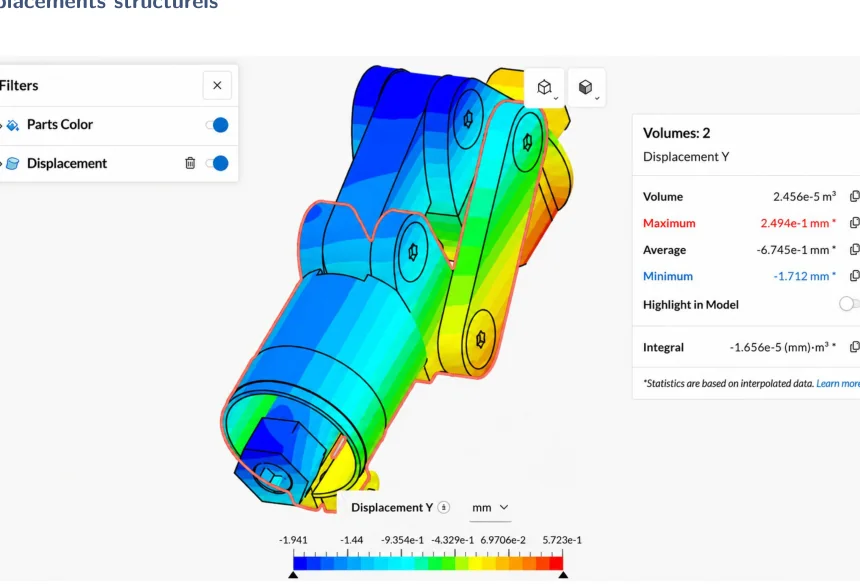
Déplacements calculésDéplacement maximal annoncé de 0,25 mmMaillage volumiqueÉléments quadratiques et raffinement
PRÉ-ÉVALUATION DE FATIGUE
Résultat calculé · charge de 2 200 N
L'étude utilise une limite d'endurance corrigée de 272,34 MPa et une contrainte de référence de 210 MPa, ce qui conduit à un facteur de sécurité estimé d'environ 1,30.
Le nombre de cycles est extrapolé par une relation analytique simplifiée ; il ne correspond pas à des cycles exécutés sur un banc. La fatigue, les contacts, le serrage et les variations réelles de charge nécessitent des vérifications expérimentales.
Résistance en fatigue préliminaire1,30facteur de sécurité estiméCalcul analytique sur contraintes issues du modèle, sans essai physique.
PRUDENCE SUR LA FATIGUE
Pourquoi la prédiction ne remplace pas un essai cyclique
Hypothèses retenues
La limite d'endurance corrigée est estimée à 272,34 MPa à partir de facteurs correctifs, puis comparée à une contrainte équivalente de référence de 210 MPa : nf ≈ 1,30.
Vérification nécessaire
Le calcul extrapole une durée de vie théorique, mais aucune sollicitation variable mesurée ni séquence de 3 millions de cycles n'a été réalisée sur un prototype. Les conditions de contact, les jeux, le serrage et l'état de surface peuvent modifier le résultat réel.
Lecture du résultat : indication préliminaire de résistance en fatigue, sans démonstration expérimentale de la durée de vie ni qualification ISO 10328.
06 / 06
Dossier de fabrication et validation
Les contrats de phase et plans de contrôle préparent l'usinage futur, sans attester la réalisation de pièces physiques.
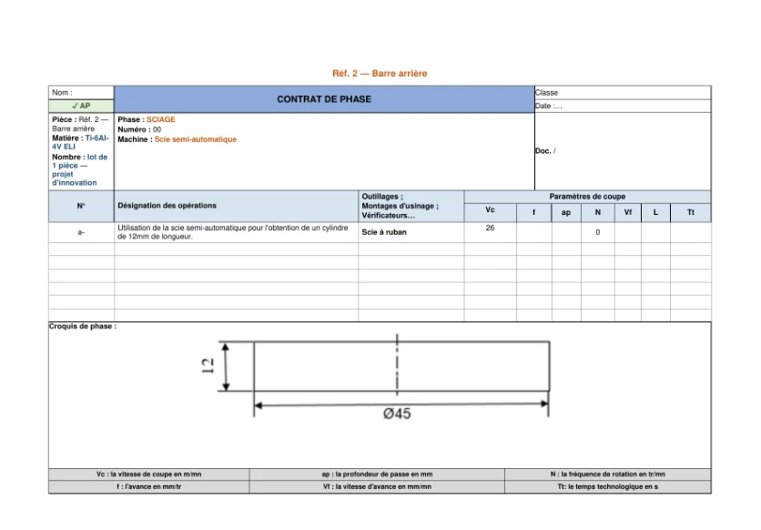
Gamme de la barre arrièreSéquence opératoire proposée
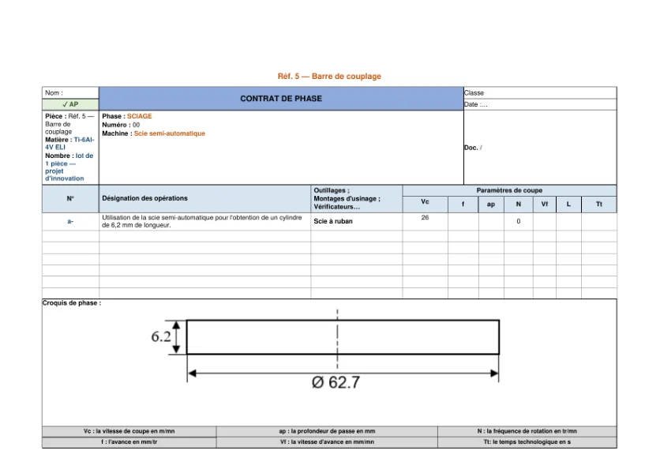
Gamme de barre de couplageUsinage et références
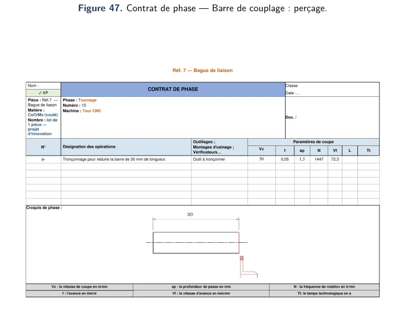
Gamme de baguePerçage et guidage
PRÉPARATION INDUSTRIELLE
De la mise en plan au contrôle dimensionnel
01Définir le brut
Choisir matériau, surépaisseurs et surfaces de référence.
02Préparer les faces
Sciage et surfaçage pour obtenir les références d'usinage.
03Usiner les contours
Fraisage des barres et supports, maintien des épaisseurs.
04Réaliser les pivots
Perçage, alésage et finition des surfaces de guidage.
05Contrôler avant montage
Dimensions, coaxialité, états de surface et jeux fonctionnels.
Cette séquence formalise une préparation d'usinage ; elle ne correspond pas à des pièces effectivement fabriquées.
PLAN DE CONTRÔLE PRÉVU
Points critiques à vérifier lors d'un prototype
Point de contrôle
Critère de conception
Moyen de vérification envisagé
Diamètre des axes
Ø 10 mm, ajustement H7/h6
Micromètre / tampon adapté
Alésages et coaxialité
Alignement des pivots articulés
Contrôle métrologique tridimensionnel
État de surface
Surfaces de pivot et guidage
Rugosimètre et inspection
Jeux aux liaisons
Rotation sans point dur
Mesure angulaire et test d'assemblage
Mobilité du mécanisme
Flexion continue sans interférence
Goniomètre / cycle cinématique
Résistance de l'ensemble
Charges représentatives, fatigue
Essais instrumentés appropriés
Contrôles proposés, et non procès-verbaux de résultats expérimentaux.
ÉTAT DE RÉALISATION
Ce qui est étudié et ce qui reste à démontrer
ÉtudiéAnalyse fonctionnelle et architecture
Exigences et modèle SysML préparés.
ÉtudiéCinématique et conception CAO
Géométrie à quatre barres, assemblage, plans de pièces.
ÉtudiéCalculs et simulation
Résultats de dimensionnement et éléments finis rapportés.
À réaliserFabrication du prototype
Usinage de précision, montage, ajustements et contrôle des jeux.
À réaliserEssais de résistance et fatigue
Tests physiques représentatifs selon les procédures appropriées.
À réaliserÉvaluation d'utilisation et conformité
Validation indépendante de sécurité avant toute utilisation humaine.
Limites de la validation
La fabrication et les essais physiques de résistance, fatigue, montage, mobilité et usage n'ont pas été réalisés. Le projet porte sur la conception et l'étude numérique d'une architecture ; aucun résultat ne permet de conclure à la conformité réglementaire ou à la sécurité d'utilisation par un patient. Les objectifs cinématiques et les conventions de calcul doivent également être consolidés.
Projet académique collectif · Étude de conception et de simulation · Document destiné à présenter la démarche technique, non à attester une homologation de dispositif médical.